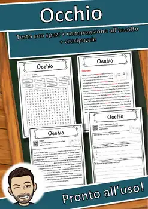
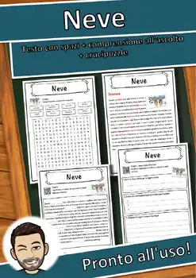
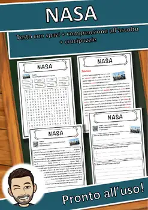
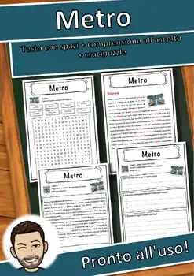
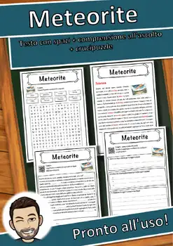
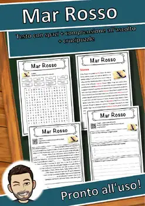

General Knowledge Worksheets
1037 printable General Knowledge worksheets (PDF) with answer keys: reading comprehension passages, reading trails and more – no prep, filter by grade.
1,037 resources
Grade
By grade: 5th Grade · 9th Grade

Family Life Reading Comprehension Passages | Life Skills Scavenger Hunt 5-6

La francophonie – French Reading BUNDLE | French-Speaking World Fiches

Valentine's Day & Kindness Reading BUNDLE | Friendship, Respect & SEL

Poker – Italian Reading Comprehension Worksheet (Scheda): Cloze & Listening

Plutone – Italian Reading Comprehension Worksheet (Scheda): Cloze & Listening

Platino – Italian Reading Comprehension Worksheet (Scheda): Cloze & Listening

Pizza – Italian Reading Comprehension Worksheet (Scheda): Cloze & Listening

Pinus – Italian Reading Comprehension Worksheet (Scheda): Cloze & Listening

Pinales – Italian Reading Comprehension Worksheet (Scheda): Cloze & Listening

Piede – Italian Reading Comprehension Worksheet (Scheda): Cloze & Listening

Petrolio – Italian Reading Comprehension Worksheet (Scheda): Cloze & Listening

Pensiero – Italian Reading Comprehension Worksheet (Scheda): Cloze & Listening

Penisola – Italian Reading Comprehension Worksheet (Scheda): Cloze & Listening

Pelé – Italian Reading Comprehension Worksheet (Scheda): Cloze & Listening

Pelle – Italian Reading Comprehension Worksheet (Scheda): Cloze & Listening

Pedagogia – Italian Reading Comprehension Worksheet (Scheda): Cloze & Listening

Parto – Italian Reading Comprehension Worksheet (Scheda): Cloze & Listening

Passato – Italian Reading Comprehension Worksheet (Scheda): Cloze & Listening

Papa – Italian Reading Comprehension Worksheet (Scheda): Cloze & Listening

Occhio – Italian Reading Comprehension Worksheet (Scheda): Cloze & Listening

Neve – Italian Reading Comprehension Worksheet (Scheda): Cloze & Listening
Naso – Italian Reading Comprehension Worksheet (Scheda): Cloze & Listening

NASA – Italian Reading Comprehension Worksheet (Scheda): Cloze & Listening
Mummia – Italian Reading Comprehension Worksheet (Scheda): Cloze & Listening

Moschea – Italian Reading Comprehension Worksheet (Scheda): Cloze & Listening

Moretto – Italian Reading Comprehension Worksheet (Scheda): Cloze & Listening

Monster – Italian Reading Comprehension Worksheet (Scheda): Cloze & Listening

Moneta – Italian Reading Comprehension Worksheet (Scheda): Cloze & Listening

Modello – Italian Reading Comprehension Worksheet (Scheda): Cloze & Listening

Mobile – Italian Reading Comprehension Worksheet (Scheda): Cloze & Listening

Miele – Italian Reading Comprehension Worksheet (Scheda): Cloze & Listening

Metro – Italian Reading Comprehension Worksheet (Scheda): Cloze & Listening

Meteorite – Italian Reading Comprehension Worksheet (Scheda): Cloze & Listening
Memoria – Italian Reading Comprehension Worksheet (Scheda): Cloze & Listening
Matita – Italian Reading Comprehension Worksheet (Scheda): Cloze & Listening
Matrimonio – Italian Reading Comprehension Worksheet (Scheda): Cloze & Listening
Martire – Italian Reading Comprehension Worksheet (Scheda): Cloze & Listening
Marmo – Italian Reading Comprehension Worksheet (Scheda): Cloze & Listening
Marionetta – Italian Reading Comprehension Worksheet (Scheda): Cloze & Listening
Maremoto – Italian Reading Comprehension Worksheet (Scheda): Cloze & Listening
Marathon – Italian Reading Comprehension Worksheet (Scheda): Cloze & Listening

Mar Rosso – Italian Reading Comprehension Worksheet (Scheda): Cloze & Listening

Mappa – Italian Reading Comprehension Worksheet (Scheda): Cloze & Listening

Mano – Italian Reading Comprehension Worksheet (Scheda): Cloze & Listening

Manga – Italian Reading Comprehension Worksheet (Scheda): Cloze & Listening

Mammella – Italian Reading Comprehension Worksheet (Scheda): Cloze & Listening

Logistica – Italian Reading Comprehension Worksheet (Scheda): Cloze & Listening

Maionese – Italian Reading Comprehension Worksheet (Scheda): Cloze & Listening
No resources found – try a different search term or filter.